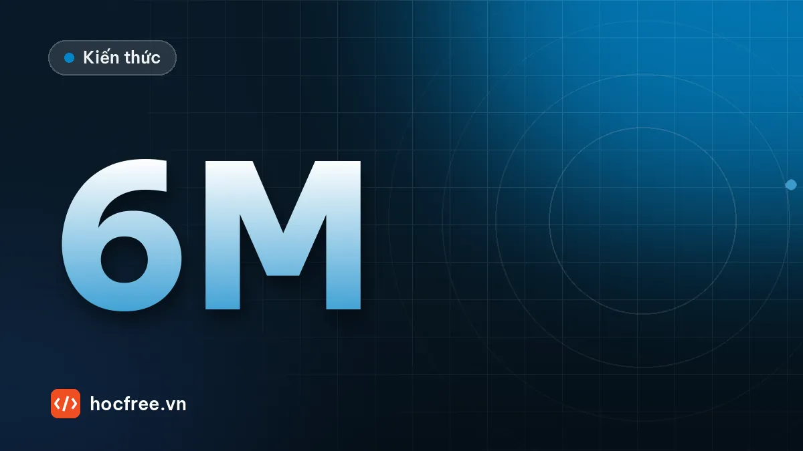

Tự học AI khi đi làm: kế hoạch 6 tháng, 7–8 giờ mỗi tuần
Nguyên tắc học bền vững, lịch tuần mẫu và kế hoạch từng tháng từ Python đến triển khai mô hình.

Nội dung bài viết
Đi làm cả ngày, tối về mệt, cuối tuần có việc gia đình. Tự học AI trong hoàn cảnh đó cần một kế hoạch thực tế, không phải lịch học của sinh viên toàn thời gian. Bài này đưa ra kế hoạch 6 tháng, khoảng 7–8 giờ mỗi tuần, cùng các nguyên tắc giúp bạn không bỏ cuộc.
Nguyên tắc trước khi bắt đầu
- Đều đặn hơn cường độ: 1 giờ mỗi ngày tốt hơn 7 giờ dồn vào Chủ nhật.
- Học qua dự án: mỗi tháng kết thúc bằng một sản phẩm nhỏ chạy được.
- Gắn với công việc thật: chọn bài toán ở chính nơi bạn làm việc, động lực sẽ cao hơn nhiều.
- Chấp nhận chưa hiểu hết: học tới đâu dùng tới đó, quay lại lý thuyết khi cần.
Lịch tuần mẫu
| Thời gian | Việc |
|---|---|
| Thứ 2–5, 45 phút buổi tối | Học bài mới, gõ lại code |
| Thứ 7, 2 giờ buổi sáng | Làm dự án của tháng |
| Chủ nhật, 30 phút | Ghi chép tổng kết tuần, lên kế hoạch tuần sau |
Kế hoạch 6 tháng
Tháng 1: Python và NumPy
Cú pháp, hàm, xử lý file, NumPy. Dự án: script xử lý thư mục ảnh và xuất báo cáo CSV (gợi ý).
Tháng 2: OpenCV và xử lý ảnh
Đọc ảnh, camera, phân ngưỡng, contour, đo đạc. Dự án: đếm và đo vật thể từ webcam.
Tháng 3: Machine Learning cơ bản
Khái niệm, scikit-learn, đánh giá mô hình. Dự án: phân loại OK/NG từ đặc trưng hình học.
Tháng 4: Deep Learning với PyTorch
Tensor, vòng lặp huấn luyện, CNN, transfer learning. Dự án: phân loại ảnh với dữ liệu tự chụp.
Tháng 5: Object Detection
Gán nhãn, huấn luyện YOLO, đánh giá mAP. Dự án: phát hiện một loại vật thể trong công việc của bạn.
Tháng 6: Triển khai và tổng kết
Xuất ONNX, chạy trong ứng dụng, viết README. Dự án: hoàn thiện một dự án để đưa vào portfolio.
Lộ trình chi tiết hơn, hướng tới nghề nghiệp cụ thể: Trở thành Vision Engineer.
Khi mất động lực
- Giảm mục tiêu thay vì bỏ hẳn: tuần bận chỉ cần 15 phút mỗi ngày để giữ nhịp.
- Tìm bạn học hoặc cộng đồng; chia sẻ tiến độ hằng tuần.
- Nhìn lại những gì đã làm được sau mỗi tháng; tiến bộ thường lớn hơn bạn cảm thấy.
- Dùng trợ lý AI để giải thích khái niệm khó, nhưng tự viết code để thật sự học.
Ghi chép học tập
Mỗi tuần viết vài dòng: đã học gì, gặp lỗi gì, giải quyết thế nào. Sau 6 tháng, đây là tài liệu quý giá để ôn lại, và là nguyên liệu để viết blog, làm portfolio xin việc.